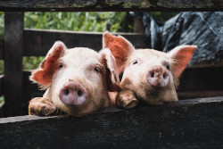
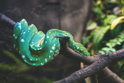
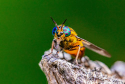

 Pecuária: é uma atividade econômica voltada para a criação de animais. As atividades pecuárias correspondem à criação e comercialização de animais diversos, como frangos, porcos [...]
Domésticos: antes de o cão se tornar nosso melhor amigo, o homem só enxergava os outros seres vivos com um objetivo: comê-los. A domesticação de animais, que começou há 12 mil anos, só tinha o princípio da fonte [...]
 Peçonhentos: os peçonhentos são os que têm a capacidade de injetar substâncias tóxicas por meio das presas. Já os venenosos são aqueles que causam envenenamento passivo por ingestão ou contato, como as lagartas ou [...]
 Insetos: são o grupo de animais mais diversificado existente na Terra. Como o maior e mais largamente distribuído grupo de animais artrópodes do planeta, os insetos representam mais que 70% de todas espécies de seres vivos descritos. Embora não haja um consenso entre os entomologistas, estima-se que existam de 5 a 30 milhões de espécies viventes [...]